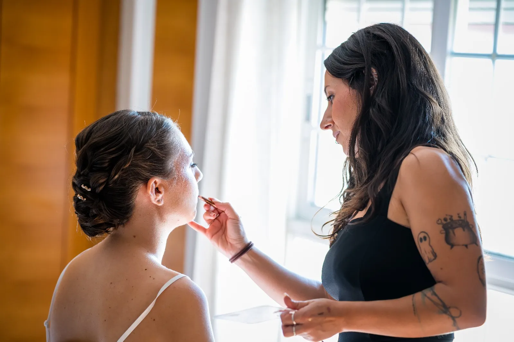
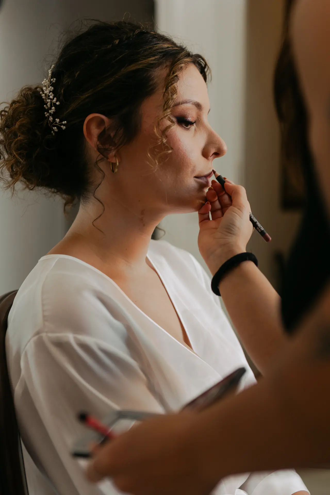

Realza tu belleza natural
Maquillaje profesional para novias, eventos y editoriales. Descubre tu mejor versión con productos de alta gama.
Ver Portfolio
Detrás de cada maquillaje hay una historia...
y mi trabajo es saber escucharla.
Soy maquilladora profesional especializada en maquillaje social y novias. Mi enfoque se centra en resaltar lo que te hace única, sin disfrazarte. Me apasiona crear maquillajes elegantes que te hagan sentir tú misma, pero con ese "algo" especial.
Creo en la belleza real, en la piel bien trabajada y en la importancia de que disfrutes el proceso tanto como el resultado.

✨ Trabajo en mi estudio privado para un trato íntimo y exclusivo, y ofrezco servicio a domicilio o en la ubicación de tu evento.
Más que Maquillaje: Sus Historias
Experiencias Alba Sona
